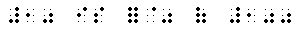

General Use of Signs of Omission: In print, omission of mathematical or literary material may be shown by a blank space, a dash, a question mark, dots, or a combination of these or other signs devised by the author. Unless otherwise stated, the omission symbol to be used in braille should correspond to the print sign. If the omission sign used in print has no braille equivalent in the code, the sign may be represented by a devised braille symbol or by a drawing. A transcriber's note must be included to explain any devised braille symbol.
Ellipsis ..  and Long Dash and Long Dash 
Any dot or series of dots in print representing an omitted term, entry, or line is an ellipsis. In braille, the ellipsis must be represented by a minimum of three dots.
When a dash is used to denote an omission in print, the long dash must be used.
Spacing with Ellipsis and Long Dash:
- The ellipsis and the long dash should generally be preceded and followed by a space. However, no space should be left between an ellipsis or long dash and a related decimal point, dollar, cent ,pound sterling, percent or prime sign.
- Sally, Ann, and ... are coming.
- John said ...
- Two and
 are ten are ten
- 14.9 12.3 = .6
- 7¢ + 9¢ = ...¢
- ...¢ + 16¢ = 30¢
- $25.00 + $25.00 = $
- .004 = %
- $7.35 = £
- 24" = '
- A space must be left between a sign of operation and an ellipsis or long dash.
- 5 X ... = 15
- 2 + 4 + 16 + 32 + ... + 712
- 17 X = 51
- 43 - = 27

- - 15 = 8
Punctuation With the Ellipsis and Long Dash:The ellipsis and the long dash must be punctuated in accordance with their context - literary punctuation in literary context and mathematical punctuation in mathematical context. When the nature of the text is in doubt, the ellipsis and the long dash must by punctuated mathematically. Except for the hyphen, no space should be left between an ellipsis or a long dash and a related punctuation mark.
- Sally, Mary, ..., and ....
- 2, 4, 6, ...,10.
- 100 X 10 = ....
- The fundamental operations are , , and .
- 1, 3, 5, , 15.
- 9 X 12 = .
- It is a -sided figure.
General Omission Symbol: 
- The general omission symbol must be used to replace an omission in print represented by a blank space or by a question mark standing alone or in combination with hyphens or a dash. The general omission symbol must be spaced as the material which it replaces, and punctuated mathematically.
- 50 ÷ 10 =
- 20- = 40
- 6 + ? = 15
- ? - 10 = 30
- 24 ? 12 = 2
- 8 X 7 ? 56
(the question mark over a dash represents a sign of comparison)
- 42 X 3 = -?-

- 10 is ?% of 100

- 27¢ + 19¢ = -?-¢
- 5, 10, ?, 20, ?.
- The number of general omission symbols to be used in braille must correspond to the number of omission signs used in print.
- 150 X 10 = ????
- 150 X 10 = 1???
- 150 X ?? = 1500
|
 Tჸe $_hodor bARionlegitim@.
Tჸe $_hodor bARionlegitim@.